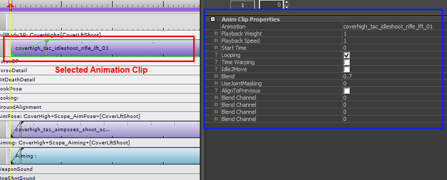
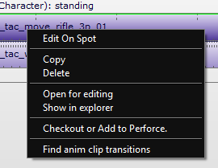

Окно свойств
Когда вы выбираете анимационный клип, в окне свойств отображаются свойства анимационного клипа.

Вы сможете редактировать их, когда в Mannequin Редактор фрагментовили при редактировании клипа перехода в Mannequin Редактор переходов. В Mannequin Предварительный просмотр вы сможете только просмотреть свойства.
Свойство анимационного клипа | Описание |
|---|---|
Анимация | Анимация, воспроизводимая клипом. Пусто для клипов «Нет». |
Вес воспроизведения | С помощью этого значения от 0 до 1 вы можете контролировать, какая часть клипа смешивается с предыдущими слоями (которые отображаются выше слой, над которым вы работаете). |
Скорость воспроизведения | Коэффициент, с которым эта анимация будет ускорена (или замедлена). По умолчанию это 1. Вы можете ускориться, используя более высокие значения, и замедлить, используя более низкие значения. |
Время начала | Время (в секундах) для пропуска начала анимации. |
Зацикливание | Будет ли этот клип зацикливаться (в отличие от повторения последней клавиши). |
Искажение времени | (Дополнительно) Включить искажение времени во время наложения. Сопоставляется с флагом анимации низкого уровня CA_TRANSITION_TIMEWARPING. |
Обновление силового скелета | Во время воспроизведения этой анимации принудительно обновите позу скелета, даже если персонажа нет на экране. Сопоставляется с флагом анимации низкого уровня CA_FORCE_SKELETON_UPDATE. (CRYENGINE 3.8.3 и выше) |
Idle2Move | <устарело — вместо этого используйте переходы манекена> Сопоставляется с флагом анимации низкого уровня CA_IDLE2MOVE. |
Полный контроль над движением корней | Если включено: во время смешивания с другими анимациями основное движение этих других анимаций игнорируется. Этот параметр работает только с анимациями, которые попадают на самый нижний слой, слой 0, в системе анимации. (CRYENGINE 3.7 и выше) |
Смесь | Продолжительность наложения (также можно редактировать визуально, перетаскивая узкую вертикальную метку слева от клипа). |
Используйте маскировку суставов | <прототип – не использовать> |
Выровнять по предыдущему | Это поле недоступно для редактирования. |
Смешать канал | Расширенный (CRYENGINE 3.7 и выше) (сопоставляется с первыми 4 каналами «пользовательских данных», указанными в CryCharAnimationParams::m_fUserData при запуске анимации. Окончательные значения также можно получить с помощью кода, используя ISkeletonAnim::GetUserData(index)) |
Контекстное меню
Если щелкнуть правой кнопкой мыши по анимационному клипу, откроется его контекстное меню.

Пояснения к параметрам, специфичным для анимационных клипов: (доступно только в CRYENGINE 3.7 или более поздней версии)
Пункт контекстного меню | Описание |
|---|---|
Открыть для редактирования | Если файл доступен локально, он открывается в редакторе, который вы настроили в меню «Инструменты/Настройки/Общие настройки/Файл». Для файлов bspace и Comb используется запись «Текстовый редактор Bspace». Для анимации файл .ma открывается (если имеется) с помощью указанного «Редактора анимации». Если файл недоступен локально, инструмент сначала пытается получить его из системы контроля версий P4. |
Показать в проводнике | Открывает окно проводника Windows, указывающее на файл. |
Оформить заказ или добавить в Perforce | Пытается проверить этот файл и связанные файлы из системы контроля версий P4. Для анимационных клипов пытается извлечь файлы .i_caf, .animsettings, а также файл .ma. |
Найдите переходы в анимационных клипах | Открывает редактор переходов и отфильтровывает этот конкретный анимационный клип. |